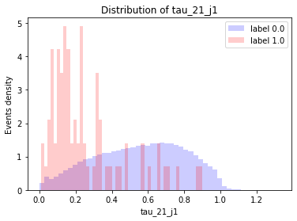
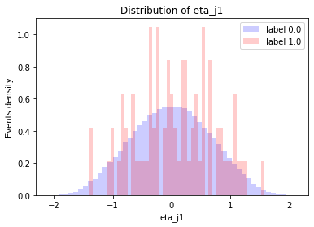
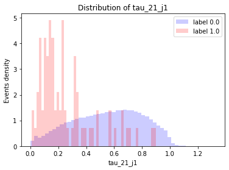
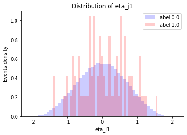
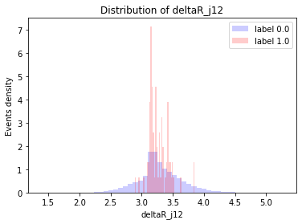
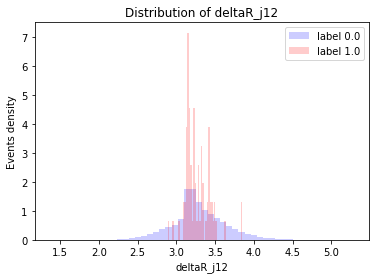
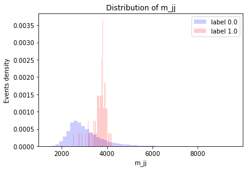
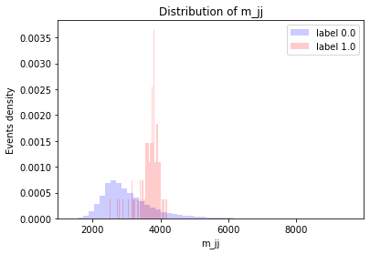

Resultados
Contenido
4. Resultados¶
En el capítulo 2 se describieron algoritmos de clasificación binaria y las métricas para compararlos. En este capítulo se van a usar estos algoritmos para clasificar los datos analizados anteriormente y se van a calcular las métricas incluidas en benchtools para compararlos.
En la primera sección se utilizarán implementaciones sencillas de algunos algoritmos descritos en la Sección 2.2 para clasificar los datos de los conjuntos R&D y BB1 y se observarán las distribuciones predichas de algunas variables. Seguidamente, se compararán los resultados de estos algoritmos con los resultados de UCluster y GAN-AE.
3.2. Conjunto BB1¶
Este conjunto de datos posee la misma señal que el conjunto R&D, pero con un 0,08 % de señal. La diferencia principal se encuentra en las masas de las partículas \(Z'\), \(X\) y \(Y\), que para este conjunto son 3,823 TeV, 732 GeV y 378 GeV, respectivamente.
Para analizar este conjunto de datos, también utilizamos una fracción de los datos. 100,000 eventos, con 0.08% de señal, que es una buena representación del conjunto completo.
3.2.1. Datos pre-procesados¶
3.2.1.1. Distribuciones¶
Las distribuciones de las variables presentan las mismas características que el conjunto R&D. Sin embargo, es más complicado observar la distribución para los eventos de señal por el bajo porcentaje.
 




 


En las distribuciones de las variables de masa, los picos coinciden con las masas de las partículas de nueva física para este conjunto.
 

3.2.1.2. Correlaciones¶
Las correlaciones de los datos de fondo son similares a las del conjunto R&D.
Para la señal, parece haber una correlación de \(\tau_{21}\_j2\) y \(E\_j2\) con el \(p_T\) del jet secundario. Sin embargo, por la poca cantidad de señal, no es evidente en los gráficos.